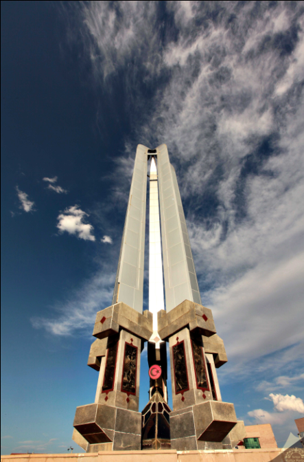

➤Iğdır, Doğu Anadolu Bölgesi’nde yer alan ve tarih boyunca birçok medeniyete ev sahipliği yapmış önemli bir yerleşimdir. Bölgenin bilinen en eski tarihî izleri, Urartu Krallığı dönemine kadar uzanır. Daha sonraki süreçte Pers İmparatorluğu, Roma İmparatorluğu ve Bizans İmparatorluğu gibi büyük güçlerin egemenliğinde kalmıştır. 11. yüzyıldan itibaren Türklerin Anadolu’ya yerleşmesiyle birlikte bölge Türk hâkimiyetine girmiş, Selçuklu Devleti ve sonrasında Osmanlı Devleti yönetimi altında gelişimini sürdürmüştür. Iğdır, stratejik konumu nedeniyle tarih boyunca sık sık el değiştirmiş, özellikle 19. ve 20. yüzyıllarda Rusya ile Osmanlı arasında önemli mücadelelere sahne olmuştur. Nihayetinde Kurtuluş Savaşı sonrasında Türkiye topraklarına katılmış ve Cumhuriyet döneminde il statüsü kazanmıştır. Günümüzde ise tarihî zenginliği ve kültürel çeşitliliği ile dikkat çeken bir şehir olarak varlığını sürdürmektedir.



Ziyaretçi Yorumları